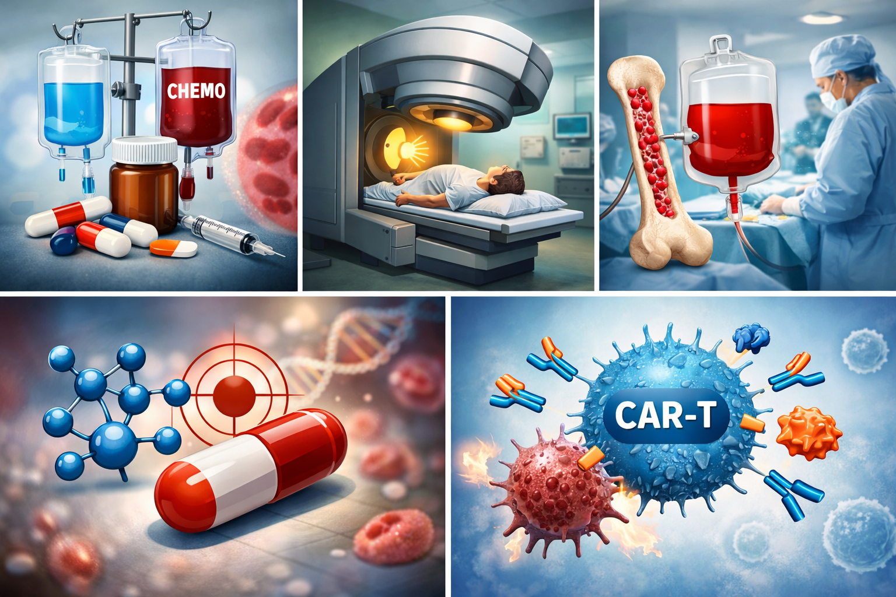

La detección temprana de la leucemia es fundamental para mejorar las posibilidades de tratamiento y recuperación. Este proceso se basa en identificar los signos iniciales y realizar estudios médicos antes de que la enfermedad avance. Aunque la leucemia puede desarrollarse de manera silenciosa, existen ciertos cambios en la salud que pueden alertar sobre su presencia. La detección temprana permite actuar rápidamente y evitar complicaciones graves, ya que cuanto antes se diagnostique, más eficaz puede ser el tratamiento.
Uno de los métodos más importantes para la detección temprana es el análisis de sangre. A través de un hemograma completo, los médicos pueden observar alteraciones en la cantidad y el tipo de células sanguíneas. Un aumento anormal de glóbulos blancos, una disminución de glóbulos rojos o de plaquetas puede ser una señal de alerta. Estos estudios suelen realizarse de manera rutinaria o cuando el paciente presenta síntomas persistentes como fatiga, fiebre sin causa aparente o sangrados frecuentes.
La evaluación médica periódica también juega un papel esencial. Las revisiones regulares permiten detectar cambios sutiles en el organismo que podrían pasar desapercibidos. En personas con antecedentes familiares de leucemia o exposición a factores de riesgo, los médicos pueden recomendar controles más frecuentes y pruebas específicas para monitorear la salud de la médula ósea.
Otro aspecto clave es la observación de síntomas físicos. Aunque no siempre son específicos, señales como palidez, pérdida de peso inexplicable, sudoración nocturna, infecciones recurrentes o inflamación de ganglios pueden indicar alteraciones en el sistema hematológico. Reconocer estos signos y acudir al médico de inmediato puede marcar la diferencia entre un diagnóstico temprano y uno tardío.
Finalmente, la detección temprana no solo depende de los exámenes médicos, sino también de la educación y conciencia sobre la enfermedad. Informar a la población acerca de los síntomas y la importancia de los chequeos regulares ayuda a identificar la leucemia en sus etapas iniciales. La combinación de vigilancia médica, análisis clínicos y conocimiento personal constituye la mejor estrategia para detectar la leucemia a tiempo y mejorar las posibilidades de éxito en el tratamiento.
